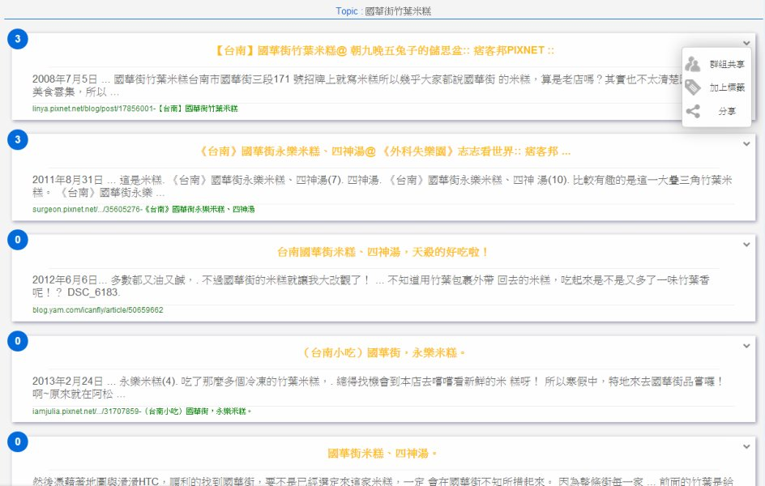

It's All for the Better Cooperation.
簡易的群組蒐集資料概念，讓您和您的夥伴在為某個專案蒐集資料時，能更加的得心應手。
即時分享、替資料加上標籤、共享到資料蒐集的工作區間，都能夠讓群體收集資料更加有效率、方便。

就讓 Groupack 建議您同伴們正在搜尋的關鍵字吧！

即時通知您，同伴們覺得有用的資料。

Having Fun in Digging the Information.
有趣的圖像化搜尋結果，讓您在蒐集資料時不再感到乏味、無趣。
主題地圖能夠讓您更加了解彼此關鍵字的關聯性。您也可以透過上面的大頭貼來選擇想要觀看的對象。
關聯性的結果均是透過系統計算您所感興趣的方向展現給您。

搜尋歷程讓您更加的了解朋友們最近都在查詢怎樣的關鍵字，讓您不再煩惱該如何下手。

Card, card, card..., All Information are in the CARDs！
所有網頁資訊都像是卡片一般的被儲存著。

工作空間的三層式設計( Workspace-Folder-Card )，讓您再整理資料就如同是在整理名片一樣的簡單。

動態時報讓您能即時清楚資料的動向，和目前同伴們推薦哪些有用的資訊，讓資料分享變得更簡單。